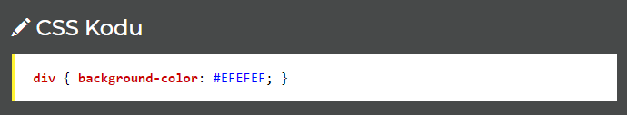
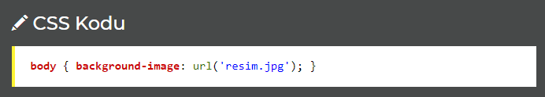
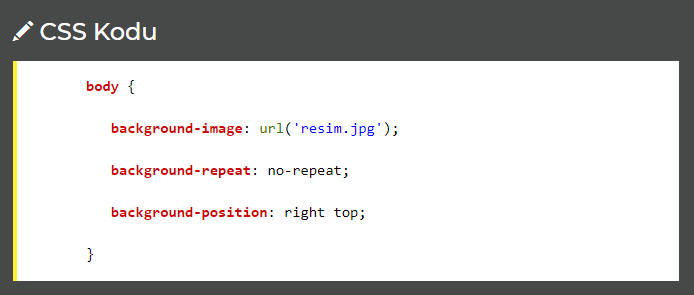
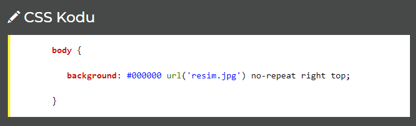
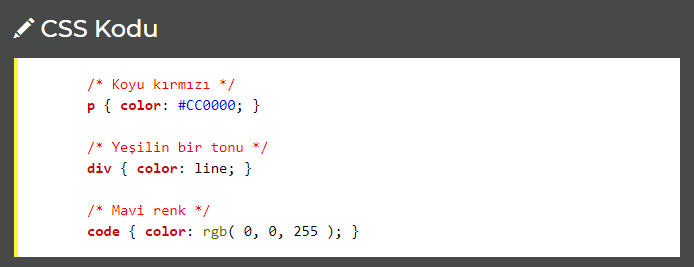

CSS Arkaplanlar
Bu sayfada HTML sayfanızın ya da sayfanızda bir bölümün arkaplan rengini, resmini ve özelliklerini nasıl belirleyeceğiniz ile ilgili bilgiler bulunmaktadır.
CSS arkaplan özellikleri bir HTML nesnesine arkaplan eklemenizde yardımcı olur. Bununla ilgili olarak tanıyacağımız CSS kodları:
background-color: Arkaplan Rengi
Bir elementin arkaplan rengini belirlememizi sağlar.

background-image: Arkaplan Resmi
Bir element içinde arkaplan resmi kullanmamızı sağlar.

Yukarıdaki gibi url('') yazılarak arasında resmin adı veya yolu yazılır. Örnekte resmin adı resim.jpg olarak gösterilmiştir.
background-repeat: Arkaplan Tekrarı / Döşeli
Kullandığımız arkaplan resminin tekrar edip etmeyeceğini belirtmemizi sağlar. Dört kullanımı vardır:
Aşağıdaki kullanım örneğini inceleyelim:

Yukarıdaki css kodu resmin tekrarlanmayacağını tarayıcıya bildirir.
background-attachment: Arkaplan Sabitliği
Bu kod kullandığımız arkaplanın sabit kalıp kalmayacağı hakkında ayar yapmamızı sağlar. Eğer özellik değerinin sabit kalmasını (yani sayfanın yerine göre değişmemesini) istiyorsak fixed özelliği kullanırız.

background-position: Resmin Nereye Hizalanacağı
Eğer background-repeat özelliğini no-repeat olarak belirlediysek bu kod yardımıyla onun hizalanma şeklini belirleme şansına sahip oluruz.

Yukarıda yer alan kod arkaplan resminin right (sağ) ve top (üst) tarafa doğru hizalanacağını bildirir.
background: Arkaplan Belirlemenin Kısa Yolu
Yukarıdaki tüm özellikleri tek bir kodda kullanmanız mümkün. Bunun için kullanacağımız kod: background.

Yukarıdaki kodda belirtilenler sırasıyla: background-color, background-image, background-repeat ve background-position.
CSS'de Renk İfadeleri
CSS dosyamızda yer yer renkleri belirtmemiz gerekebilir. Bunun için çeşitli yollar var. Bunlardan en çok kullanılan üç tanesi:
Onaltılık (Hex) Renkler:#000000 şeklinde önce diyez sonra 6 adet 0-9 ve A-F değerleri alabilen sembollerden oluşur. Örneğin #404040 bir rengi ifade etmektedir.
Bu renk kodlarına resim işlem programlarınız yardımıyla (photoshop, paint shop pro gibi) ulaşabilirsiniz.
RGB (Kırmızı, Yeşil, Mavi) Renkler:Bir renk oluştururken kırmızı, yeşil ve mavinin tonlarını belirterek renk oluşturmamızı sağlar. Örneğin rgb( 0, 0, 0 ) siyah rengi belirtir. Mavi bir renk elde etmek istediğimizde Red - Green - Blue üçlemesinde en sonda yer alan mavinin değerini arttırmamız yeterli olur. Yani rgb( 0, 0, 255 ) mavi rengi verir. Windows'daki Paint Brush (MS Paint) programı ve diğer resim editörleri yardımıyla RGB değerlerini alarak renk oluşturabilirsiniz.
Tarayıcı Renk İsimleri:İngilizce olarak belirlenmiş bazı renk adlarını yazarak renk elde edebilirsiniz. Örneğin white beyaz, black siyah, blue mavi rengini verecektir.
Aşağıda renklerle ilgili örnek bir kullanım var:
